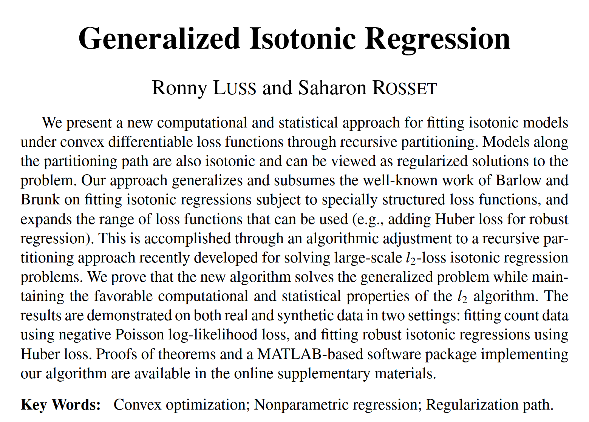

Isotonic Regression
Edward Wall
Isotonic Regression
\[
\begin{aligned}
&\text{minimise} &\quad \sum_i \text{loss} (\hat{y}_i, y_i) & \\
&\text{subject to} &\quad \hat{y}_i \preceq \hat{y}_j, &\quad \forall \left ( i, j \right ) \in \mathfrak{I}
\end{aligned}
\]
\(y_i\) : input/measured value\(\hat{y}_i\) : regressed value\(\mathfrak{I}\) : constraints
Generalised Isotonic Regression Framework
Very general formulation; the constraints can be expressed via
any arbitrary graph.
example
fitting to blue points
green is typical linear regression
and orange is the result of the algorithm I implemented
comparatively less shape constraints (linear, polynomial)
spoiler, can visualise iterative algorithm
Constraints of existing solutions
either limited to 2-dimensions
or process only a few hundred points
or only support grids in 3-dimensions
limited loss function support
there are plenty of implementatons available to solve
this 1-dimensional version
especially non-discretised form
searched for available implementation
written in R only handle few hundred points not graph etc
in cpp
both could only supporting grids, not arbitrary loss only l2 l1

potential solution is 2014 …
what is it about
set about understanding and implementing to plug this gap
in open source
\[
\begin{aligned}
&\text{minimise} &\quad \sum_i \text{loss} (\hat{y}_i, y_i) & \\
&\text{subject to} &\quad \hat{y}_i \preceq \hat{y}_j, &\quad \forall \left ( i, j \right ) \in \mathfrak{I}
\end{aligned}
\]
\[\begin{aligned}
&\text{minimise} &\quad \sum_{i \in V} x_i \frac{\partial \text{loss}_i(\hat{y}_V, y_V)}{\partial \hat{y}_V} \\
&\text{subject to} &\quad x_i - x_j \leq 0 &\quad \forall (i,j) \in \mathfrak{I}_V \\
& &\quad -x_i - 1 \leq 0 &\quad \forall i \in V \\
& &\quad x_i - 1 \leq 0 &\quad \forall i \in V
\end{aligned}
\]
paper provides algorithm to change the
ISO Problem (in case of L2 quadratic constraint weakly polynomial)
into an iterative series of linear constraint problems faster solve
if you would like details
the paper is freely available on arxiv
or you can check my blog post on it
C++ Implementation
higher potential speed
interface to many languages with
lower memory usage
decided to do in Cpp, for the speed and to minitgate ram usage
and means, can somewhat easily add bindings for other languages
supporting more at once, e.g R and Python
I have even worked on a WASM interface which demo at end
FetchContent_Declare(
GIR
GIT_REPOSITORY "https://github.com/ewal31/GeneralisedIsotonicRegression"
GIT_TAG 0.3.0
GIT_SHALLOW TRUE
)
FetchContent_MakeAvailable(
GIR
)
std::tuple<Eigen::SparseMatrix<bool>, VectorXu, VectorXu>
points_to_adjacency(
const Eigen::MatrixX<V>& points
);
std::pair<VectorXu, Eigen::VectorXd>
generalised_isotonic_regression(
const Eigen::SparseMatrix<bool>& adjacency_matrix,
YType&& _y,
WeightsType&& _weights,
const LossFunction<LossType>& loss_fun,
uint64_t max_iterations = 0
);
import multivariate_isotonic_regression as mir
# create some test roughly monotonic points
X = np.array([(i, j)
for i in range(width)
for j in range(width)])
y = 3 * ((X[:, 0] // 7) + (X[:, 1] // 4)) + 1 + \
1.5 * np.random.rand(width ** 2)
# points_to_adjacency rearranges the points roughly
# according to how many other points they dominate
adj, orig_idxs, new_idxs = mir.points_to_adjacency(X)
# we rearrange X and y to have the same ordering
X_reordered = X[new_idxs, :]
y_reordered = y[new_idxs]
group, yhat = mir.generalised_isotonic_regression(
adj,
y_reordered,
loss_function = "pnorm",
p = 1.1
)
probs show same picture from above
Implementation Advantages
open source
more than 2-dimensions
arbitrary graph structures
duplicates points
any convex loss functions
Next Steps
interface more robust to user error
R interface
improve speed with more than 3-dimensions
replace linear programming with faster
support even more loss functions
few potential options
easiest to try would be a divide and conquer that should be somethin like klog(n) check this
Directed Minimum Spanding Tree
efficient orthogonal range search
Non-convex via submodular supports some more loss functions
show simple
show pnorm, close to median/mean
show duplicate points
compiled to WASM
setup web visualisation so one can try out for their needs